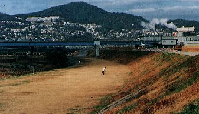

ギフチョウ、ジャコウアゲハ、ミドリシジミ、オオウラギンヒョウモン、ウラナミジャノメ…。かつて池田にすんでいたはずですが、一覧表には、絶滅としか説明が入らなかったチョウたちです。長い間私たちの隣人(りんじん)としてともにくらしていた何種類かのチョウが、その姿を消してしまいました。
今新たに絶滅という言葉を入れなければならないかもしれないチョウがいます。


写真左…シルビアシジミ 1992年9月16日 兵庫県伊丹市下河原
写真右…ツマグロキチョウ 1989年9月23日 兵庫県川西市笹部

ミヤコグサ
シルビアシジミの食草。猪名川堤防ぞいで見られなくなってきました。

池田の蝶…紹介のページにもどる